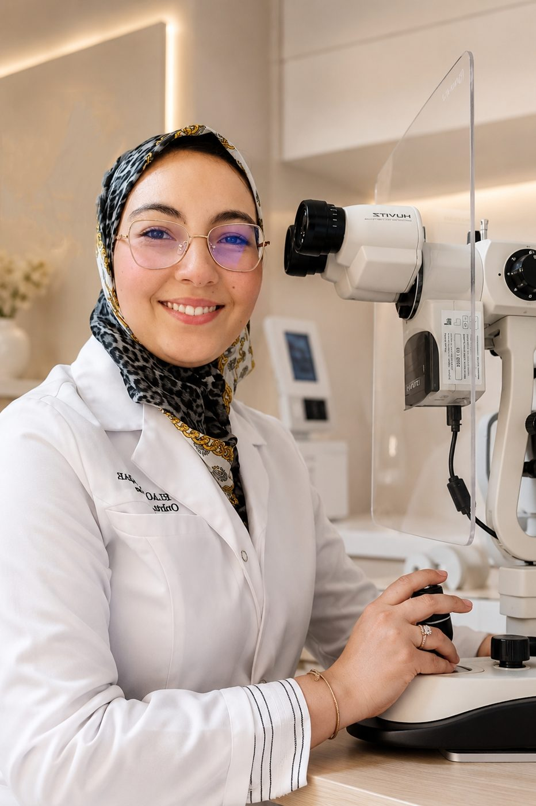

Chirurgie
Chirurgie de la cataracte
Une prise en charge par phacoémulsification, technique moderne permettant de retrouver une vision plus claire.
Prendre rendez-vous
Qu’est-ce que la cataracte ?
La cataracte correspond à l’opacification progressive du cristallin, la lentille naturelle de l’œil. La vision devient floue ou voilée. Elle est le plus souvent liée à l’âge, mais peut avoir d’autres causes.
Signes qui doivent alerter
Comment se déroule la prise en charge ?
-
1
Consultation et bilan
Examen complet pour confirmer le diagnostic et évaluer le retentissement sur votre vision.
-
2
Examens préopératoires
Mesures précises de l’œil pour choisir l’implant adapté.
-
3
Intervention
Retrait du cristallin opacifié par phacoémulsification et pose d’un implant.
-
4
Suivi
Contrôles après l’intervention pour surveiller la récupération visuelle.

Dr Elaouni RajaeDiplômée en chirurgie de la cataracte par phacoémulsification, Collège Royal des Ophtalmologues (Royaume-Uni).
Questions fréquentes
L’intervention est-elle douloureuse ?+
[Réponse à rédiger et valider par le Dr Elaouni]
Combien de temps dure la récupération ?+
[Réponse à rédiger et valider par le Dr Elaouni]
Faut-il opérer les deux yeux ?+
[Réponse à rédiger et valider par le Dr Elaouni]
Votre vision devient floue ?
Un bilan au cabinet permet d’évaluer votre situation.
Appeler le 05 32 39 18 18 Écrire sur WhatsApp